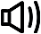
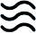

Filtro de Alta Eficiência para Purificador de Ar Xiaomi 4 Lite
Filtragem de alta eficiência em 3 camadas para proteger sua saúde
Elimina odores e pelos do seu PET | Bloqueio 360° de partículas de sujeiras grandes | Ar puro todo dia
Compatível apenas com o Purificador de Ar Xiaomi 4 Lite
Recomendado substituir o filtro a cada 6-12 meses
Filtro integrado multifuncional
Filtragem camada por camada para uma boa saúde
Filtro primário, filtro de alta eficiência Xiaomi e um filtro de carvão ativado de alta qualidade trabalham juntos para purificar seu ar e mantê-lo saudável.
Filtro principal
Bloqueio 360° de partículas grandes de sujeira
O filtro primário fornece uma proteção inicial filtrando poeira, cabelos e migalhas, entre outras partículas grandes, e é resistente a vincos, óleo, ácidos e muito mais para garantir uma longa vida útil.
Filtro de alta eficiência Xiaomi
99,97% de eliminação de partículas de 0,3μm*
O filtro de alta eficiência e grande superfície remove material particulado fino de 2,5, pólen e muito mais para uma saída consistente de ar limpo.
Filtro de carvão ativado de alta qualidade
Poderosa absorção de odor
O filtro de carvão ativado* de alta qualidade, com estrutura de poros sofisticada e carbono distribuído uniformemente, remove efetivamente os poluentes do ar e os odores que são prejudiciais na sua casa.

Odores da cozinha
Diferença entre o filtro de alta eficiência Xiaomi e o filtro HEPA convencional
Combinação de duas tecnologias: filtragem eletrostática e mecânica. O filtro de alta eficiência Xiaomi pode remover 99,97% das partículas transportadas pelo ar, mesmo as tão pequenas quanto 0,1 micrômetros e retém poeira, material particulado 2,5, pólen, pelos de animais, fumaça e até os menores micro plásticos. A taxa de filtragem do filtro de alta eficiência Xiaomi é de 99,97% para partículas finas de até 0,3 mícron e pode chegar a 99,99% para partículas tão pequenas quanto 0,1 mícron.
Filtro convencional HEPA
Menos ar limpo
O filtro HEPA é feito de fibra de vidro densa para reter partículas, o que significa que menos ar limpo passa pelo filtro.
Barulhento
Grandes volumes de ar são forçados através do filtro HEPA, o que significa que é necessária uma velocidade maior do ventilador, gerando mais ruído.
Maior consumo de energia
Para que o filtro HEPA libere mais ar limpo, o motor deve funcionar a uma velocidade mais alta, resultando em um maior consumo de energia.
Filtro de Alta Eficiência Xiaomi
Mais ar limpo
O filtro Xiaomi usa fibras de PP derretidas com tecnologia eletrostática. Com maior espaço entre as fibras, grandes volumes de ar podem passar pelo filtro.
Silencioso
Com uma densidade de fibra mais baixa, o filtro permite que o ar passe em alta velocidade, resultando em menos ruído.
Menor consumo de energia
Com uma densidade de fibra menor, o filtro Xiaomi é capaz de liberar o mesmo volume de ar limpo que um filtro convencional, mas com um consumo de energia muito menor.
Aviso: O desempenho do filtro é testado pelo Instituto de Testes e Inspeção da China para Eletrodomésticos (Número do Relatório: WCv-21-40119). Devido às especificações técnicas do filtro, o ambiente de teste e os parâmetros podem diferir.
Filtro para uso por até um ano
Ar limpo todos os dias com um filtro de longa duração
O filtro multifuncional é durável, embora o desempenho diminua gradualmente. Recomenda-se substituir o filtro a cada 6–12 meses.
Conectividade com o aplicativo Mi Home/Xiaomi Home
Lembretes de substituição de filtro no seu smartphone
Você pode verificar a condição do filtro a qualquer momento por meio do aplicativo Mi Home/Xiaomi Home. O aplicativo ainda estima a data de substituição do filtro com base no seu uso.
*O desempenho do filtro é testado pelo Instituto de Teste e Inspeção da China para Eletrodomésticos (Número do Relatório: WCv-21-40115). Devido às especificações técnicas do filtro, o ambiente de teste e os parâmetros podem diferir.